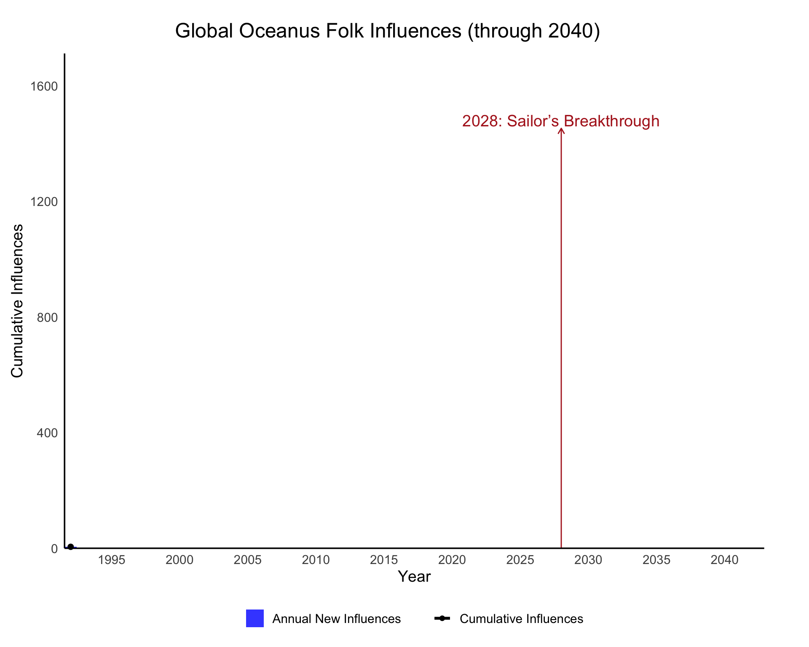
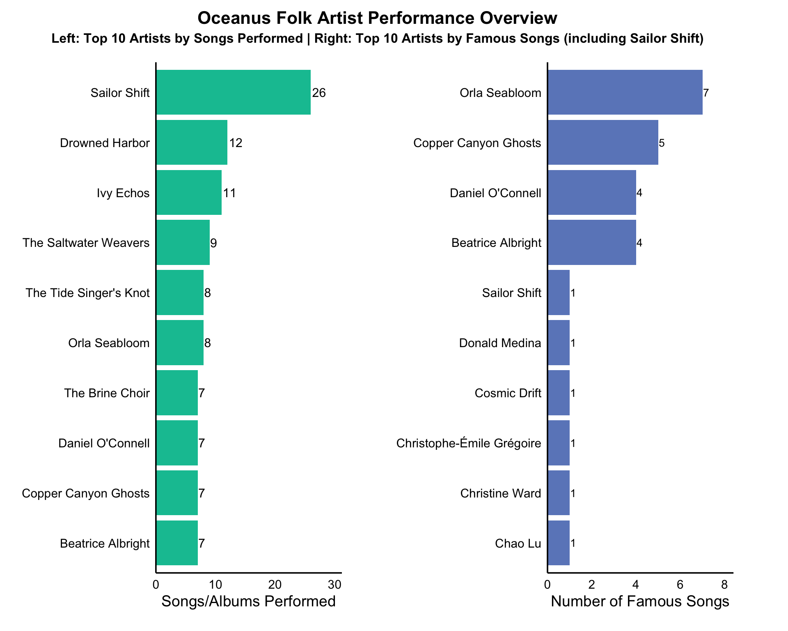
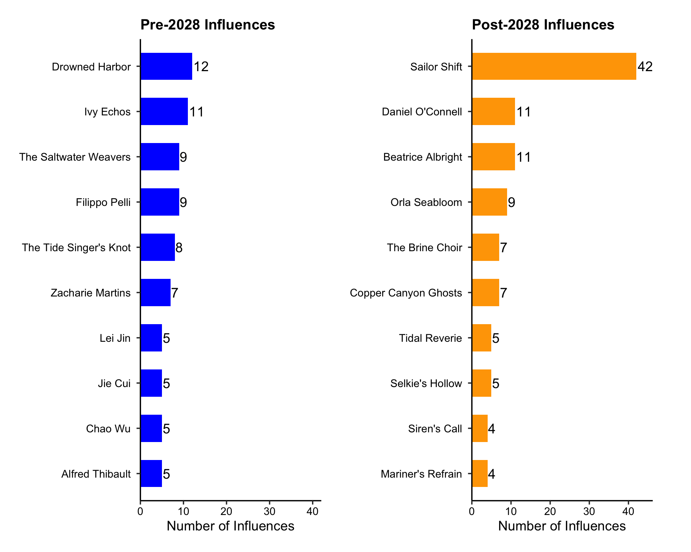
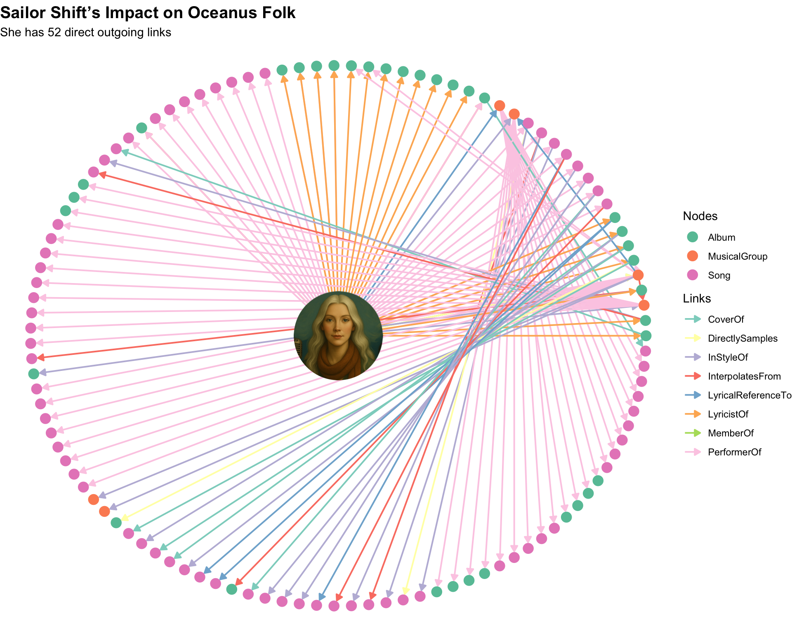
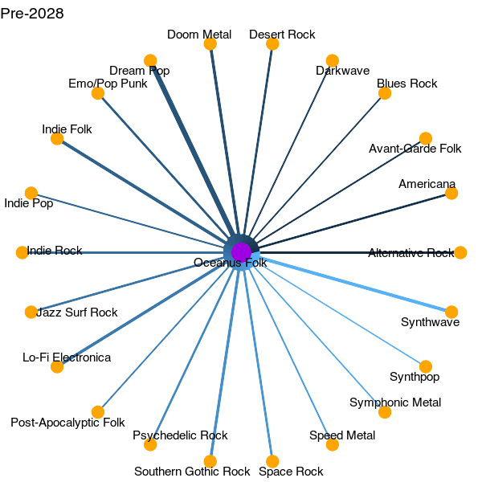

Code
pacman::p_load(tidyverse,jsonlite,tidygraph,ggraph,gganimate, scales, ggplot2, gifski, plotly,dplyr, knitr, visNetwork,igraph,scales,ggimage, tidytext,patchwork, RColorBrewer, magick)Nor Hendra
May 22, 2025
June 1, 2025
For Take-home Exercise 2, my group members (Andre, Jin Yao) and I have decided to do Mini-Challenge 1. Through our discussion (and the help of a wheel randomizer), we split the challenge’s questions amongst ourselves. Jin Yao will be doing question 1, myself will be doing question 2 and Andre will be doing question 3.
Question 2: Develop visualizations that illustrate how the influence of Oceanus Folk has spread through the musical world.
Was this influence intermittent or did it have a gradual rise?
What genres and top artists have been most influenced by Oceanus Folk?
On the converse, how has Oceanus Folk changed with the rise of Sailor Shift? From which genres does it draw most of its contemporary inspiration?
In the code chunk below, p_load() of pacman package is used to load the R packages into R environment
In the code chunk below, fromJSON() of jsonlite package is used to import MC1_graph.json file into R and save the output object.
This ensures each id from node list is mapped to the correct row number
edges_clean <- links_tbl %>%
rename(source_id = source, target_id = target) %>%
left_join(nodes_clean %>% select(id, rowid),
by = c("source_id" = "id")) %>% rename(from = rowid) %>%
left_join(nodes_clean %>% select(id, rowid),
by = c("target_id" = "id")) %>% rename(to = rowid) %>%
filter(!is.na(from) & !is.na(to))infl_edges <- edges_clean %>%
left_join(nodes_clean %>% select(rowid, source_genre = genre),
by = c("from" = "rowid")) %>%
filter(source_genre == "Oceanus Folk") %>%
left_join(nodes_clean %>% select(rowid, target_year = year),
by = c("to" = "rowid")) %>%
filter(!is.na(target_year))
#Summarise and compute the cumulative count over time
yearly <- infl_edges %>%
count(target_year, name = "new_influences") %>%
arrange(target_year) %>%
mutate(cumulative = cumsum(new_influences))Each plot has its own unique characteristics required for data cleaning. Some are Oceanus Folk outgoing influences, some are incoming influence. For this reason, each plot’s code will have its own data cleaning done within the code chunk itself. However, to keep the methods clear for understanding - each chunk within the code chunk will be introduced as a #description of what was done in the code chunk itself.
Sailor Shift is one of the defining musical icons of her generation, a global superstar whose journey began on the quiet, coastal island nation of Oceanus. Rooted in the soul-stirring genre of Oceanus Folk, Sailor’s early music echoed the traditions of her homeland, capturing the attention of local audiences with its authenticity and emotional depth. Her rise began in earnest in 2023 as the lead vocalist of Ivy Echoes, an all-female band that helped bring Oceanus Folk into the contemporary spotlight. Though the band disbanded by 2026, Sailor’s solo breakthrough came just two years later when a viral single catapulted her into global recognition which marked the first time an Oceanus Folk track topped the international charts.
Since then, Sailor has released a new album almost every year, each more successful than the last. While she has evolved musically, often blending elements of Indie Pop and Indie Folk, she remains a proud champion of Oceanus Folk. Her collaborations with both rising and established artists have not only expanded her reach but also served to amplify the genre itself. Sailor’s enduring commitment to uplifting lesser-known musicians and promoting the music of her roots has helped fuel a cultural resurgence, drawing global attention to Oceanus and inspiring a new wave of artists from the region.
Now, in 2040, as she returns home, Sailor Shift is more than just a musician - she is a movement. Her story, and that of the Oceanus Folk genre she helped elevate, is the subject of a new investigation by local journalist Silas Reed. By visualizing a detailed knowledge graph of her career, collaborations, and influence, we uncover not just the legacy of one artist, but the rise of a cultural phenomenon.
Was this influence intermittent or did it have a gradual rise?
For this plot, I looked at all edges that would compute the outgoing influence of Oceanus Folk as this would give an idea on whether it was an intermittent or gradual rise. I chose to use an animation as it was presented in “Visualising and Analysing Time-Oriented Data” to show the intermittent change over time of Oceanus Folk’s influence. To further illustrate Sailor’s impact, I drew a milestone segment on 2028 to show if there were any change after her breakthrough. As this is purely to give reader’s an idea of Oceanus Folk’s influence on the world - I chose to remove the gridlines to intensify the effect Oceanus Folk had.
The y-axis would be the year and x-axis the cumulative influence. I chose to use cumulative influence as this would be a more accurate representation of Oceanus Folk’s influence throughout the year. In blue bar graph, you will also see the annual influences each year had. When these two are combined, it gives a clearer picture on how Oceanus Folk has influenced throughout the years and also give a better understanding of how each year added on to that cumulative influence.
# 1. Computing edges of Oceanus Folk
yearly <- edges_clean %>%
left_join(
nodes_clean %>% select(rowid, genre),
by = c("to" = "rowid")
) %>%
filter(
genre == "Oceanus Folk",
`Edge Type` %in% c(
"PerformerOf","ComposerOf","ProducerOf","LyricistOf",
"RecordedBy","DistributedBy",
"InStyleOf","InterpolatesFrom","CoverOf",
"LyricalReferenceTo","DirectlySamples"
)
) %>%
left_join(
nodes_clean %>% select(rowid, media_year = year),
by = c("to" = "rowid")
) %>%
filter(!is.na(media_year)) %>%
# Count number of new influences per year
count(target_year = media_year, name = "new_influences") %>%
complete(
target_year = seq(min(target_year), max(target_year)),
fill = list(new_influences = 0)
) %>%
arrange(target_year) %>%
mutate(cumulative = cumsum(new_influences))
# 2. Extend series to 2040
yearly_ext <- yearly %>%
complete(
target_year = seq(min(target_year), 2040),
fill = list(new_influences = 0, cumulative = NA_real_)
) %>%
arrange(target_year) %>%
mutate(
cumulative = if_else(
is.na(cumulative),
lag(cumulative, default = 0) + new_influences,
cumulative
)
)
# 3. Define the milestone for 2028
milestones <- tibble(
milestone_year = 2028,
label = "2028: Sailor’s Breakthrough"
) %>%
left_join(yearly_ext, by = c("milestone_year" = "target_year"))
# 4. Build and animate the plot
p_anim <- ggplot(yearly_ext, aes(x = target_year)) +
geom_col(aes(y = new_influences, fill = "Annual New Influences"),
alpha = 0.8, show.legend = TRUE) +
geom_line(aes(y = cumulative, color = "Cumulative Influences"),
size = 1.2, show.legend = TRUE) +
geom_point(aes(y = cumulative, color = "Cumulative Influences"),
size = 2) +
geom_segment(data = milestones,
aes(x = milestone_year, xend = milestone_year,
y = 0, yend = cumulative),
arrow = arrow(length = unit(0.2, "cm")),
color = "firebrick", size = 0.5) +
geom_text(data = milestones,
aes(x = milestone_year, y = cumulative, label = label),
vjust = -0.2, hjust = 0.5,
color = "firebrick", size = 5) +
scale_fill_manual(name = NULL,
values = c("Annual New Influences" = "blue")) +
scale_color_manual(name = NULL,
values = c("Cumulative Influences" = "black")) +
guides(
fill = guide_legend(nrow = 1, byrow = TRUE,
override.aes = list(color = NA)),
color = guide_legend(nrow = 1, byrow = TRUE,
override.aes = list(linetype = 1,
shape = 16,
size = 2,
fill = NA))
) +
scale_x_continuous(
breaks = pretty_breaks(10),
minor_breaks = seq(min(yearly_ext$target_year), 2040, by = 1),
expand = expansion(mult = c(0, 0.05))
) +
scale_y_continuous(
limits = c(0, max(yearly_ext$cumulative, na.rm = TRUE)),
expand = expansion(mult = c(0, 0))
) +
coord_cartesian(clip = "off") +
labs(
title = "Global Oceanus Folk Influences (through 2040)",
x = "Year",
y = "Cumulative Influences"
) +
theme_minimal(base_size = 14) +
theme(
panel.grid = element_blank(),
plot.title.position = "plot",
plot.title = element_text(hjust = 0.5, size = 18, face = "bold"),
axis.line = element_line(color = "black"),
axis.ticks.length = unit(3, "pt"),
legend.position = "bottom",
legend.direction = "horizontal",
legend.key = element_rect(fill = NA, color = NA),
plot.margin = margin(t = 20, r = 40, b = 10, l = 10),
panel.clip = "off"
) +
transition_reveal(target_year) +
ease_aes("linear")
# 5. Render animation
animate(
p_anim,
nframes = length(unique(yearly_ext$target_year)),
fps = 5,
renderer = gifski_renderer("oceanus_folk_extended.gif")
)
p_anim
The approach is similar to the animation plot, however I understand that readers would want to see exactly how many influences on that particular year. Hence, an interactivity plot to see the exact count of each year would be beneficial for readers to understand better.
Hover over to see the count of each year!
# 1. Compute all outgoing influences
yearly_raw <- edges_clean %>%
inner_join(
nodes_clean %>%
filter(genre == "Oceanus Folk", `Node Type` %in% c("Song","Album")) %>%
select(rowid),
by = c("to" = "rowid")
) %>%
filter(
`Edge Type` %in% c(
"InStyleOf","InterpolatesFrom","CoverOf",
"LyricalReferenceTo","DirectlySamples",
"PerformerOf","ComposerOf","ProducerOf",
"LyricistOf","RecordedBy","DistributedBy"
)
) %>%
left_join(nodes_clean %>% select(rowid, year), by = c("to" = "rowid")) %>%
filter(!is.na(year)) %>%
count(target_year = year, name = "new_influences")
# 2. Extend series to 2040
yearly <- yearly_raw %>%
complete(target_year = seq(min(target_year), 2040),
fill = list(new_influences = 0)) %>%
arrange(target_year) %>%
mutate(cumulative = cumsum(new_influences))
# 4. Plot
plot_ly(
data = yearly,
x = ~target_year,
y = ~new_influences,
type = "bar",
name = "Annual New Influences",
marker = list(color = "blue"),
hoverinfo = "text",
hovertext = ~paste0(
"Year: ", target_year,
"<br>New Influences: ", new_influences
)
) %>%
add_trace(
y = ~cumulative,
type = "scatter",
mode = "lines+markers",
name = "Cumulative Influences",
line = list(color = "black", width = 2),
marker = list(color = "firebrick", size = 6),
hoverinfo = "text",
hovertext = ~paste0(
"Year: ", target_year,
"<br>Cumulative: ", cumulative
)
) %>%
layout(
title = "Global Oceanus Folk Influence (through 2040)",
margin = list(b = 80, t = 80),
xaxis = list(
title = list(text = "Year", standoff = 15),
dtick = 5,
automargin = TRUE
),
yaxis = list(
title = "Cumulative Influence",
automargin = TRUE
),
legend = list(
orientation = "h",
x = 0.5,
xanchor = "center",
y = -0.1
)
)From the chart above, it’s clear that Oceanus Folk’s influence did not rise in a smooth, steady way. Instead, you see long stretches of relatively little activity punctuated by sharp “spikes” in annual new influences, followed by further lulls before another burst, and so on.
Early years (1990s–early 2000s): Almost zero new connections with flat bars, barely any cumulative growth.
Mid-2000s: The first real uptick with a handful of years where new influences jumps into double digits, causing the cumulative line to start climbing. Indicating the start of Oceanus Folk’s influence!
Around 2009–2011: A pronounced surge in annual influences (taller blue bars), driving a steep step up in the red cumulative curve.
Post-2015 and especially post-2020: Yet another wave of high‐volume influences, pushing the cumulative count sharply higher once again.
After roughly 2028‒2030: You see no flat activity and surge, but rather a steady gradual increment. You can definitely see Sailor Shift’s breakthrough coming into play here.
That pattern of long quiet intervals followed by discrete bursts tells us the genre’s “spread” was intermittent, not a gradual, linear march. Each major burst corresponds to some cluster of releases, collaborations, or high-profile sampling/cover events that temporarily drove lots of new links into Oceanus Folk.
What genres and top artists have been most influenced by Oceanus Folk?
For this question, I felt like starting off with a visNetwork would give a great overview before I broke it down into granular details. For this visNetwork, I decided to go for how Oceanus Folk directly influenced other artists or genres. From there it spread even more to show which artists are under those genre and what songs/albums they have put out. I have added some visPhysics to give it some fluidity for a more fun interactive approach!
Hovering over each node will give you a count of what I am trying to find. Nodes are also weighted depending on their counts to show how much influence they have.
Oceanus Folk -> Total Artists and Genres Influenced.
Genres -> Influences and Total Artists
Artists -> Total songs/albums
# 1. Enrich edges with source genre and performer/media types
edges2 <- edges_clean %>%
left_join(nodes_clean %>% select(rowid, source_genre = genre),
by = c("from" = "rowid")) %>%
left_join(nodes_clean %>% select(rowid, performer_type = `Node Type`),
by = c("from" = "rowid")) %>%
left_join(nodes_clean %>% select(rowid, media_type = `Node Type`),
by = c("to" = "rowid"))
# 2. Identify all Oceanus Folk media IDs
folk_media <- nodes_clean %>%
filter(`Node Type` %in% c("Song","Album") & genre == "Oceanus Folk") %>%
pull(rowid)
# 3. Count how many Oceanus Folk media each band performed
folk_cover_counts <- edges2 %>%
filter(`Edge Type` == "PerformerOf",
to %in% folk_media,
performer_type == "MusicalGroup") %>%
left_join(nodes_clean %>% select(rowid, name),
by = c("from" = "rowid")) %>%
count(name, name = "n_folk") %>%
rename(artist = name)
# 4. Gather all media (Song/Album) each band performed and count
band_media_edges <- edges2 %>%
filter(`Edge Type` == "PerformerOf",
performer_type == "MusicalGroup",
media_type %in% c("Song","Album")) %>%
left_join(nodes_clean %>% select(rowid, band = name),
by = c("from" = "rowid")) %>%
left_join(nodes_clean %>% select(rowid, media = name),
by = c("to" = "rowid")) %>%
distinct(band, media)
media_counts <- band_media_edges %>%
count(band, name = "n_media") %>%
rename(artist = band)
# 5. Compute Oceanus Folk → genre influence edges
infl_edges <- edges2 %>%
filter(source_genre == "Oceanus Folk",
`Edge Type` %in% c("InStyleOf","InterpolatesFrom","CoverOf",
"LyricalReferenceTo","DirectlySamples",
"PerformerOf","ComposerOf","ProducerOf",
"LyricistOf","RecordedBy","DistributedBy"))
genre_counts <- infl_edges %>%
left_join(nodes_clean %>% select(rowid, genre),
by = c("to" = "rowid")) %>%
count(genre, name = "n_influences") %>%
filter(genre != "Oceanus Folk")
# 6. For each influenced genre, count distinct artists
media_by_genre <- nodes_clean %>%
filter(`Node Type` %in% c("Song","Album") & genre %in% genre_counts$genre) %>%
select(media_rowid = rowid, genre)
genre_band_edges <- edges2 %>%
filter(to %in% media_by_genre$media_rowid) %>%
left_join(media_by_genre, by = c("to" = "media_rowid")) %>%
left_join(nodes_clean %>% select(rowid, band_name = name, `Node Type`),
by = c("from" = "rowid")) %>%
filter(`Node Type` == "MusicalGroup") %>%
distinct(genre, band_name)
genre_band_counts <- genre_band_edges %>%
count(genre, name = "n_bands")
# 7. Build nodes_vis
root_node <- tibble(
id = "Oceanus Folk",
label = "Oceanus Folk",
group = "Oceanus Folk",
title = paste0(
"Genres influenced: ", sum(genre_counts$n_influences),
"<br>Total Artists: ", nrow(media_counts)
)
)
genre_nodes <- genre_counts %>%
left_join(genre_band_counts, by = "genre") %>%
transmute(
id = genre,
label = genre,
group = "Genre",
title = paste0("Influences: ", n_influences, "<br>Artists: ", n_bands)
)
artist_nodes <- full_join(folk_cover_counts, media_counts, by = "artist") %>%
replace_na(list(n_folk = 0, n_media = 0)) %>%
transmute(
id = artist,
label = artist,
group = "Artist",
title = paste0("Folk covers: ", n_folk,
"<br>Total songs/albums: ", n_media)
)
nodes_vis <- bind_rows(root_node, genre_nodes, artist_nodes)
# 8. Build edges_vis
e1 <- genre_counts %>%
left_join(genre_band_counts, by = "genre") %>%
transmute(
from = "Oceanus Folk",
to = genre,
title = paste0("Influences: ", n_influences, "<br>Bands: ", n_bands)
)
e2 <- folk_cover_counts %>%
transmute(
from = "Oceanus Folk",
to = artist,
title = paste0("Folk covers: ", n_folk)
)
e3 <- genre_band_edges %>%
transmute(
from = genre,
to = band_name,
title = paste0("Genre performer: ", band_name)
)
edges_vis <- bind_rows(e1, e2, e3)
# 9. Add Band → Media edges
media_nodes <- band_media_edges %>%
transmute(
id = media,
label = media,
group = "Song/Album",
title = paste0("Performed by: ", band)
) %>%
distinct(id, .keep_all = TRUE)
media_edges <- band_media_edges %>%
transmute(
from = band,
to = media,
title = paste0("Performed by: ", band)
) %>%
distinct()
nodes_vis <- bind_rows(nodes_vis, media_nodes)
edges_vis <- bind_rows(edges_vis, media_edges)
# 10. De-duplicate & size nodes
nodes_vis <- nodes_vis %>% distinct(id, .keep_all = TRUE)
edges_vis <- edges_vis %>% distinct(from, to, .keep_all = TRUE)
nodes_vis <- nodes_vis %>%
left_join(genre_counts %>% select(id = genre, n_influences), by = "id") %>%
left_join(folk_cover_counts %>% select(id = artist, n_folk), by = "id") %>%
mutate(
size = case_when(
id == "Oceanus Folk" ~ 60,
group == "Genre" ~ rescale(n_influences, to = c(20, 50)),
group == "Artist" ~ rescale(n_folk, to = c(20, 50)),
TRUE ~ 20
)
) %>%
select(-n_influences, -n_folk)
# 11. Prune to only artists directly linked from root or genres
valid_bands <- unique(c(e2$to, e3$to))
valid_media <- media_edges %>%
filter(from %in% valid_bands) %>%
pull(to)
valid_ids <- c("Oceanus Folk", genre_nodes$id, valid_bands, valid_media)
nodes_vis <- nodes_vis %>%
filter(id %in% valid_ids)
# 12. Draw the interactive network
visNetwork(nodes_vis, edges_vis, width = "100%", height = "700px") %>%
visNodes(shape = "dot", font = list(size = 14, face = "bold")) %>%
visEdges(smooth = FALSE, arrows = "to") %>%
visGroups(groupname = "Oceanus Folk",
color = list(background = "#9E00E3", border = "#9E00E3")) %>%
visGroups(groupname = "Genre",
color = list(background = "#FFA500", border = "#FFA500")) %>%
visGroups(groupname = "Artist",
color = list(background = "#00C2A1", border = "#00C2A1")) %>%
visGroups(groupname = "Song/Album",
color = list(background = "#FFB6C1", border = "#FFB6C1")) %>%
visOptions(
highlightNearest = list(enabled = TRUE, degree = 1, hover = TRUE),
nodesIdSelection = list(enabled = TRUE, useLabels = TRUE)
) %>%
visLegend(useGroups = TRUE, position = "left", main = "Legend") %>%
visLayout(randomSeed = 42) %>%
visPhysics(solver = "forceAtlas2Based", stabilization = TRUE)The visualization makes it clear that Oceanus Folk’s influence radiates most strongly into a handful of adjacent genres. Above all, Indie Folk, Dream Pop, and Synthwave. In the graph, these genres appear as the largest orange‐colored nodes directly linked to “Oceanus Folk,” indicating that they have the highest number of outgoing stylistic or production edges.
Indie Folk sits at the very top of the list: many Oceanus Folk songs and albums have either been covered by Indie Folk artists, sampled by them, or cited as “in style of,” giving that genre the single largest count of influence connections. This made no surprise given Sailor’s collaboration with Indie Folk artists.
Dream Pop is the next most prominent recipient of Oceanus Folk’s creative DNA. A significant number of Oceanus Folk recordings have been interpolated or reimagined by Dream Pop acts.
Synthwave also shows up as a major sink of influence. Several Oceanus Folk songwriters have co‐written or produced tracks for Synthwave artists.
Behind those primary genre nodes, you also see smaller but still noticeable clusters for Alternative Rock, Indie Pop, and Post-Apocalyptic Folk. In each case, the node size reflects the total number of distinct Oceanus Folk to “genre” edges, and hovering over, say, the Indie Pop node reveals that a dozen or so Oceanus Folk songs and albums.
Given how huge the visNetwork is, I decided to further break down to Oceanus Folk’s influence by plotting and interactive plot using plotly. In this plot, the goal is to provide an actual count of how it was influenced and how Sailor’s breakthrough led to an increase in multiple genre’s influence. I added a milestone to show clearly how the influence changed because of Sailor Shift. Instead of finding just Oceanus Folk media, I looked for how Oceanus Folk’s artists also influenced other genres to give a better clarity of its influence.
Double click the legends to single out a genre or single click to remove them in the visualisation.
# Oceanus Folk Influence on Other Genres
# 1. Edge sets
of_edges <- c("PerformerOf","ComposerOf","ProducerOf","LyricistOf")
style_edges <- c("InStyleOf","InterpolatesFrom","CoverOf",
"LyricalReferenceTo","DirectlySamples")
collab_edges <- c("CollaboratedWith","WrittenBy","Notoriety")
# 2. Which media are Oceanus Folk?
of_media <- nodes_clean %>%
filter(genre == "Oceanus Folk",
`Node Type` %in% c("Song","Album")) %>%
pull(rowid)
# 3. Hop 0→1: artists who made Oceanus Folk media
of_artists <- edges_clean %>%
filter(`Edge Type` %in% of_edges, to %in% of_media) %>%
pull(from) %>% unique()
# 4. Hop 1→2: every outgoing edge from those artists
hop2_all <- edges_clean %>%
filter(from %in% of_artists) %>%
transmute(target_media = to,
edge_type = `Edge Type`)
# 5. Annotate each target media’s genre & year
hop2_all <- hop2_all %>%
left_join(
nodes_clean %>% select(rowid, genre, year),
by = c("target_media" = "rowid")
) %>%
rename(target_genre = genre,
target_year = year) %>%
filter(!is.na(target_genre),
target_genre != "Oceanus Folk",
!is.na(target_year))
# 6. Count per genre/year and cumulative
yearly <- hop2_all %>%
count(target_genre, target_year, name = "new_links") %>%
arrange(target_genre, target_year) %>%
group_by(target_genre) %>%
mutate(cumulative = cumsum(new_links)) %>%
ungroup()
# 7. Extend through the years
all_genres <- unique(yearly$target_genre)
start_year <- min(yearly$target_year[yearly$cumulative > 0], na.rm = TRUE)
all_years <- seq(start_year, 2035)
yearly_ext <- yearly %>%
complete(target_genre = all_genres,
target_year = all_years,
fill = list(new_links = 0)) %>%
group_by(target_genre) %>%
arrange(target_year) %>%
mutate(cumulative = cumsum(new_links)) %>%
ungroup()
# 8. Color palette
pal <- if (length(all_genres) <= 8) {
RColorBrewer::brewer.pal(length(all_genres), "Set2")
} else {
colorRampPalette(RColorBrewer::brewer.pal(8, "Set2"))(length(all_genres))
}
names(pal) <- all_genres
# 9. Build the plot
plot_ly(
data = yearly_ext,
x = ~target_year,
y = ~cumulative,
color = ~target_genre,
colors= pal,
type = 'scatter',
mode = 'lines+markers',
split = ~target_genre,
hoverinfo = 'text',
hovertext = ~paste0(
"Genre: ", target_genre,
"<br>Year: ", target_year,
"<br>Cumulative: ", cumulative
)
) %>%
layout(
title = "Oceanus Folk Influence on Other Genres",
xaxis = list(
title = "Year",
tickmode = "linear",
dtick = 5,
tickangle = 0,
range = c(start_year, 2035)
),
yaxis = list(title = "Cumulative Influence"),
legend = list(x = 1.02, y = 0.5, orientation = "v"),
shapes = list(
list(
type = "line",
x0 = 2028, x1 = 2028,
y0 = 0, y1 = max(yearly_ext$cumulative, na.rm=TRUE),
line = list(dash="dash", color="firebrick")
)
),
annotations = list(
list(
x = 2028,
y = max(yearly_ext$cumulative, na.rm=TRUE),
text = "2028: Sailor’s Breakthrough",
xref = "x", yref = "y",
xanchor = "right",
showarrow = TRUE, arrowhead = 2,
ax = -30, ay = -40,
font = list(color="firebrick", size=12)
)
)
)In the years before Sailor’s 2028 breakthrough, Oceanus Folk’s influence was modest and largely confined to a handful of neighboring styles. Indie Folk in particular crept forward slowly, Dream Pop made occasional forays, and undertones of Synthwave began to whisper among a few adventurous producers. If you imagine each genre as a sapling, Indie Folk was the first to send out a thin branch, Dream Pop a thinner bud, and Synthwave only a tiny sprout, all inching upward at a nearly flat trajectory.
Then came 2028, when Sailor’s breakthrough exploded to the music scene. Almost overnight, the dashed vertical marker at 2028 on the plot signals a turning point of what had been small, incremental upticks in cumulative influences suddenly bend sharply upward. Indie Folk, turns into a burgeoning tree, its cumulative line accelerating steeply as dozens of Oceanus Folk‐rooted songwriters are plucked up by indie singer and songwriters eager to capture that genre. Dream Pop’s line, rockets skyward as reverb‐soaked Oceanus Folk riffs become the secret ingredient in its soundscapes. Synthwave, too, now climbs rapidly as producers sample the tunes from Oceanus Folk.
But the ripple doesn’t stop there. In the immediate aftermath of 2028, you also see Americana suddenly pick up speed. As Sailor integrates motifs borrowed from her homeland into her chart-topping tracks, a wave of rock-abilly and roots musicians reaches back to Oceanus Folk’s catalog for fresh lyrical phrasing and open-tuned guitar techniques. Desert Rock, previously untouched, begins to shimmer with Oceanus Folk echoes with melodies appearing in post-2028 influence, creating that melodic symbiosis. Even Jazz Surf Rock which was only influenced on 2023 weaved Oceanus Folk’s tunes into surf jams and jazzy improvisations.
The plot shows all six lines, Indie Folk, Dream Pop, Synthwave, Americana, Desert Rock, and Jazz Surf Rock arching upward together. Indie Folk holds its lead (with the tallest cumulative total), Dream Pop is just a hair behind, and Synthwave sits athird in raw numbers but with one of the steepest post-2028 slopes. Americana comes next, having doubled its pace; Desert Rock and Jazz Surf Rock which was almost imperceptible before, now rise visibly as smaller but steadily thickening lines. The story the plot tells is unmistakable. Sailor Shift’s breakthrough unlocked Oceanus Folk’s hidden currents, letting its melodies and techniques surge outward into an ever-wider array of genres. What began as isolated tendrils of influence transformed into a broad, interwoven canopy that, after 2028, shot skyward almost like a sudden summer growth spurt proving that one artist’s leap can cause entire forests of musical styles to flourish.
In this plot, I have laid out the top 10 artists that were of Oceanus Folk influence. It is a composite of top 10 who performed Oceanus Folk songs and top 10 who had a notoriety date in the songs. The reason for this is to answer the ‘top artist’ aspect of this question. I decided to only use edges “PerformerOf” to accurately describe artists of the Oceanus Folk genre. Since Persons and MusicalGroups did not have anything on the ‘genre’ column of nodes. I extracted who the song was performed by and pulled the genre of that song and tied it to the artist. It is important to note that this pulls the distinct songs that the artist performed. This method allowed me to know which artist were performing Oceanus Folk genre.
# 1. Data Cleaning
nodes_clean <- nodes_tbl %>%
mutate(
date_raw = coalesce(release_date, written_date, notoriety_date),
date_parsed = parse_date_time(date_raw, orders = c("Ymd","Y-m-d","Y"), quiet = TRUE),
year = year(date_parsed),
rowid = row_number()
) %>%
select(rowid, id, name, `Node Type`, genre, notoriety_date)
edges_clean <- links_tbl %>%
rename(source_id = source, target_id = target) %>%
left_join(nodes_clean %>% select(id, rowid), by = c("source_id" = "id")) %>%
rename(from = rowid) %>%
left_join(nodes_clean %>% select(id, rowid), by = c("target_id" = "id")) %>%
rename(to = rowid) %>%
filter(!is.na(from) & !is.na(to))
# 2.1 Invertible edge type = "PerformerOf"
invertible <- c("PerformerOf")
# 2.2 All Oceanus Folk media rowids
of_media <- nodes_clean %>%
filter(
genre == "Oceanus Folk",
`Node Type` %in% c("Song", "Album", "RecordLabel")
) %>%
pull(rowid)
# 2.3 All PerformerOf edges pointing to that media
inv_edges_1 <- edges_clean %>%
filter(
`Edge Type` %in% invertible,
to %in% of_media
) %>%
transmute(
media_id = to,
artist_id = from
)
# 2.4 Annotate artist names & types; keep only Person/MusicalGroup
inv_annot_1 <- inv_edges_1 %>%
left_join(
nodes_clean %>% select(rowid, ArtistName = name, ArtistType = `Node Type`),
by = c("artist_id" = "rowid")
) %>%
filter(ArtistType %in% c("Person", "MusicalGroup"))
# 2.5 Count distinct OF media per artist
artist_counts <- inv_annot_1 %>%
distinct(ArtistName, media_id) %>%
count(ArtistName, name = "Count") %>%
arrange(desc(Count))
# 2.6 Top 10 artists
top10 <- artist_counts %>% slice_head(n = 10) %>%
mutate(ArtistName = fct_reorder(ArtistName, Count))
# 2.7 Plot 1: Top 10 OF Artists (by total media performed)
p1 <- ggplot(top10, aes(x = ArtistName, y = Count)) +
geom_col(fill = "#00C2A1") +
geom_text(
aes(label = Count),
hjust = -0.1,
color = "black",
size = 4
) +
coord_flip(clip = "off") +
labs(
x = NULL,
y = "Songs/Albums Performed"
) +
scale_y_continuous(expand = expansion(mult = c(0, 0.2))) +
theme_minimal(base_size = 14) +
theme(
panel.grid.major = element_blank(),
panel.grid.minor = element_blank(),
axis.line = element_line(color = "black"),
axis.text.y = element_text(color = "black", margin = margin(r = 2)),
axis.text.x = element_text(color = "black"),
axis.title.y = element_text(face = "bold"),
plot.title = element_text(face = "bold", hjust = 0.5),
plot.margin = margin(t = 10, r = 40, b = 10, l = 10)
)
# 3. Top 10 Artists by notoriety
# 3.1 Filter to Oceanus Folk songs with a notoriety_date
famous_of_songs <- nodes_clean %>%
filter(
`Node Type` == "Song",
genre == "Oceanus Folk",
!is.na(notoriety_date),
str_trim(notoriety_date) != ""
) %>%
select(song_rowid = rowid)
# 3.2 Find all PerformerOf edges pointing to those “famous” OF songs
inv_edges_2 <- edges_clean %>%
filter(
`Edge Type` == "PerformerOf",
to %in% famous_of_songs$song_rowid
) %>%
transmute(
song_rowid = to,
artist_rowid = from
)
# 3.3 Annotate artist names & types; keep only Person/MusicalGroup
inv_annot_2 <- inv_edges_2 %>%
left_join(
nodes_clean %>% select(artist_rowid = rowid, ArtistName = name, ArtistType = `Node Type`),
by = "artist_rowid"
) %>%
filter(ArtistType %in% c("Person", "MusicalGroup"))
# 3.4 Count “famous OF songs” per artist
artist_famous_counts <- inv_annot_2 %>%
distinct(ArtistName, song_rowid) %>%
count(ArtistName, name = "FamousSongCount") %>%
arrange(desc(FamousSongCount))
sailor_row <- artist_famous_counts %>% filter(ArtistName == "Sailor Shift")
top10_famous <- artist_famous_counts %>%
filter(ArtistName != "Sailor Shift") %>%
slice_head(n = 9) %>%
bind_rows(sailor_row) %>%
mutate(ArtistName = fct_reorder(ArtistName, FamousSongCount))
# 3.5 Plot 2: Top 10 Artists by “Famous” OF Songs
p2 <- ggplot(top10_famous, aes(x = ArtistName, y = FamousSongCount)) +
geom_col(fill = "#6C88C4") +
geom_text(
aes(label = FamousSongCount),
hjust = -0.1,
color = "black",
size = 3.5
) +
coord_flip(clip = "off") +
labs(
x = NULL,
y = "Number of Famous Songs"
) +
scale_y_continuous(expand = expansion(mult = c(0, 0.2))) +
theme_minimal(base_size = 14) +
theme(
panel.grid.major = element_blank(),
panel.grid.minor = element_blank(),
axis.line = element_line(color = "black"),
axis.text.y = element_text(color = "black", margin = margin(r = 2)),
axis.text.x = element_text(color = "black"),
axis.title.y = element_text(face = "bold"),
plot.title = element_text(face = "bold", hjust = 0.5),
plot.margin = margin(t = 10, r = 40, b = 10, l = 10)
)
# 4. Combine plots side by side
combined_plot <- p1 + p2 +
plot_layout(ncol = 2, widths = c(1, 1)) +
plot_annotation(
title = "Oceanus Folk Artist Performance Overview",
subtitle = "Left: Top 10 Artists by Songs Performed | Right: Top 10 Artists by Famous Songs (including Sailor Shift)",
theme = theme(
plot.title = element_text(size = 16, face = "bold", hjust = 0.5),
plot.subtitle = element_text(size = 12, hjust = 0.5, face = "bold"),
plot.margin = margin(t = 10, r = 10, b = 10, l = 10)
)
)
# 5. Display the composite
print(combined_plot)
The composite bar chart offers a side‐by‐side comparison of two key dimensions of Oceanus Folk performance. On the left, “Songs/Albums Performed” ranks the ten artists who have appeared most frequently on any Oceanus Folk recording. At the very top sits Sailor Shift, with nearly three dozen distinct credits which is an unsurprising result given how prolific she’s been. Just below her, a small tier of collaborators (both solo vocalists and instrumentalists) also boast double‐digit performance counts, signaling that they have been core contributors to the genre alongside Sailor over many years. As you move toward the bottom of the left panel, you see artists whose Oceanus Folk appearances taper into single digits, suggesting a longer “tail” of musicians who participate less regularly but still make meaningful contributions.
On the right, “Number of Famous Songs” highlights the ten artists whose tracks most often reached a notoriety threshold (i.e., notable songs). Here, the ranking shifts notably. For example, some artists who had only a handful of overall performances land in the top five on the right because the few songs they did perform became breakout hits. Conversely, a few high‐volume collaborators fall out of the upper tiers because, despite performing many tracks, fewer of those tracks broke into “notorious” status.
In this plot, I wanted to break down even further from the bar graph above fo the top 3. The point of this is to show how the top artists (both in terms of performing Oceanus Folk and with notable songs) are interconnected to each other. Showing the spirit of collaboration in the music industry of the Oceanus Folk genre.
Click on the edges or the nodes to see how they are interconnected! I have removed labels on them to give it a clear look, but they are still accessible when clicking on it.
# 1 Data Cleaning
nodes_clean <- nodes_tbl %>%
mutate(
date_raw = coalesce(release_date, written_date, notoriety_date),
date_parsed = parse_date_time(date_raw, orders = c("Ymd","Y-m-d","Y"), quiet = TRUE),
year = year(date_parsed),
rowid = row_number()
) %>%
select(rowid, id, name, `Node Type`, genre, notoriety_date)
edges_clean <- links_tbl %>%
rename(source_id = source, target_id = target) %>%
left_join(nodes_clean %>% select(id, rowid), by = c("source_id" = "id")) %>%
rename(from = rowid) %>%
left_join(nodes_clean %>% select(id, rowid), by = c("target_id" = "id")) %>%
rename(to = rowid) %>%
filter(!is.na(from) & !is.na(to))
# 2. Identify top 3 by total OF media performed
of_media <- nodes_clean %>%
filter(
genre == "Oceanus Folk",
`Node Type` %in% c("Song", "Album", "RecordLabel")
) %>%
pull(rowid)
inv_edges <- edges_clean %>%
filter(`Edge Type` == "PerformerOf", to %in% of_media) %>%
transmute(media_id = to, artist_id = from)
inv_annot <- inv_edges %>%
left_join(nodes_clean %>% select(rowid, ArtistName = name, ArtistType = `Node Type`),
by = c("artist_id" = "rowid")) %>%
filter(ArtistType %in% c("Person", "MusicalGroup"))
artist_counts <- inv_annot %>%
distinct(ArtistName, media_id) %>%
count(ArtistName, name = "TotalOF") %>%
arrange(desc(TotalOF))
top3_performed <- artist_counts %>% slice_head(n = 3) %>% pull(ArtistName)
# 3. Identify top 3 by number of famous OF songs
famous_of_songs <- nodes_clean %>%
filter(
`Node Type` == "Song",
genre == "Oceanus Folk",
!is.na(notoriety_date),
str_trim(notoriety_date) != ""
) %>%
pull(rowid)
inv_famous <- edges_clean %>%
filter(`Edge Type` == "PerformerOf", to %in% famous_of_songs) %>%
transmute(fav_media_id = to, fav_artist_id = from)
inv_famous_annot <- inv_famous %>%
left_join(nodes_clean %>% select(rowid, ArtistName = name, ArtistType = `Node Type`),
by = c("fav_artist_id" = "rowid")) %>%
filter(ArtistType %in% c("Person", "MusicalGroup"))
artist_famous_counts <- inv_famous_annot %>%
distinct(ArtistName, fav_media_id) %>%
count(ArtistName, name = "FamousOF") %>%
arrange(desc(FamousOF))
top3_famous <- artist_famous_counts %>% slice_head(n = 3) %>% pull(ArtistName)
# 4. Combine the two top‐3 sets
all_artists <- union(top3_performed, top3_famous)
# 5. Build full igraph
g_full <- graph_from_data_frame(
d = edges_clean %>% select(from, to),
vertices = nodes_clean %>% mutate(name = as.character(rowid)),
directed = FALSE
)
# 6. Find all shortest‐path nodes/edges connecting each artist pair
artist_rowids <- nodes_clean %>%
filter(name %in% all_artists) %>%
select(name, rowid) %>%
mutate(rowid = as.character(rowid)) %>%
deframe()
pairs <- combn(all_artists, 2, simplify = FALSE)
all_path_nodes <- character(0)
all_path_edges <- integer(0)
for (pair in pairs) {
a <- pair[1]; b <- pair[2]
v_a <- artist_rowids[a]; v_b <- artist_rowids[b]
sp <- shortest_paths(g_full, from = v_a, to = v_b, output = "both")
if (length(sp$vpath[[1]]) == 0) next
verts <- sp$vpath[[1]] %>% as_ids()
all_path_nodes <- union(all_path_nodes, verts)
eids <- sp$epath[[1]]
all_path_edges <- union(all_path_edges, as.integer(eids))
}
# 7. Include songs and albums performed by top artists
media_performed <- inv_annot %>%
filter(ArtistName %in% top3_performed) %>%
pull(media_id) %>% as.character()
media_famous <- inv_famous_annot %>%
filter(ArtistName %in% top3_famous) %>%
pull(fav_media_id) %>% as.character()
album_performed <- edges_clean %>%
filter(`Edge Type` == "PerformerOf",
to %in% nodes_clean$rowid[nodes_clean$`Node Type` == "Album"],
from %in% nodes_clean$rowid[nodes_clean$name %in% all_artists]) %>%
pull(to) %>%
as.character()
song_nodes <- union(media_performed, media_famous)
album_nodes <- album_performed
all_media_nodes <- union(song_nodes, album_nodes)
all_path_nodes <- union(all_path_nodes, all_media_nodes)
# 8. Prepare nodes_vis (**** ONLY CHANGE HERE ****) ------------------------
nodes_vis <- nodes_clean %>%
filter(as.character(rowid) %in% all_path_nodes) %>%
transmute(
id = as.character(rowid),
label = name,
shape = if_else(rowid %in% famous_of_songs, "star", "circle"),
color = case_when(
name %in% top3_performed & !(name %in% top3_famous) ~ "#6C88C4",
name %in% top3_famous & !(name %in% top3_performed) ~ "#00C2A1",
name %in% intersect(top3_performed, top3_famous) ~ "#FFBF65",
rowid %in% famous_of_songs ~ "#FF5768",
TRUE ~ "#FFBF65"
),
size = 20,
font.size = 0,
title = paste0(
"<b>", name, "</b><br/>Type: ", `Node Type`,
if_else(rowid %in% famous_of_songs, "<br/>Notorious", "")
)
)
# 9. Prepare edges_vis
# 9a. Shortest‐path edges
path_edges_df <- as_data_frame(g_full, what = "edges") %>%
mutate(edge_index = row_number()) %>%
filter(edge_index %in% all_path_edges) %>%
transmute(
from = as.character(from),
to = as.character(to),
title = edges_clean$`Edge Type`[edge_index]
)
# 9b. Edges linking artists → songs
artist_song_edges <- bind_rows(
inv_annot %>%
filter(ArtistName %in% all_artists, as.character(media_id) %in% song_nodes) %>%
transmute(
from = artist_rowids[ArtistName],
to = as.character(media_id),
title = paste0("Performed: ", nodes_clean$name[media_id])
),
inv_famous_annot %>%
filter(ArtistName %in% all_artists, as.character(fav_media_id) %in% song_nodes) %>%
transmute(
from = artist_rowids[ArtistName],
to = as.character(fav_media_id),
title = paste0("Performed (Famous): ", nodes_clean$name[fav_media_id])
)
) %>% distinct()
# 9c. Edges linking artists → albums
artist_album_edges <- edges_clean %>%
filter(
`Edge Type` == "PerformerOf",
as.character(to) %in% album_nodes,
as.character(from) %in% artist_rowids
) %>%
transmute(
from = as.character(from),
to = as.character(to),
title = paste0("Performed Album: ", nodes_clean$name[to])
) %>%
distinct()
# Combine all edges
edges_vis <- bind_rows(path_edges_df, artist_song_edges, artist_album_edges)
# 10. Render visNetwork (edges black, with arrows, no labels) ------------
visNetwork(nodes_vis, edges_vis, width = "100%", height = "600px") %>%
visNodes(
shape = nodes_vis$shape,
color = nodes_vis$color,
size = nodes_vis$size,
font = list(size = nodes_vis$font.size)
) %>%
visEdges(
smooth = FALSE,
color = list(color = "#000000"), # edges are now black
arrows = "to", # arrowheads at target end
label = NULL # no edge‐type labels displayed
) %>%
visOptions(
highlightNearest = list(enabled = TRUE, degree = 1),
nodesIdSelection = list(enabled = TRUE, useLabels = TRUE)
) %>%
visLegend(
useGroups = FALSE,
addNodes = list(
list(label = "Top-3 Performers", shape = "dot", color = "#00C2A1", size = 20),
list(label = "Top-3 Notoriety Artists", shape = "dot", color = "#6C88C4", size = 20),
list(label = "Notorious Songs", shape = "star",color = "#FF5768",size = 20),
list(label = "Intersect/Songs/Albums", shape = "dot", color = "#FFBF65", size = 20)
),
position = "right",
width = 0.25
) %>%
visLayout(randomSeed = 42)Sailor Shift occupies a central place in this collaborative web. Her lone “notorious” single brought together her own performance with the work of producers, songwriters, and session musicians, each of whom lent their expertise and reputation to lift the track into the spotlight. Those collaborators then appear on other artists’ albums, carrying the credibility they gained from working with her into new projects. At the same time, Sailor’s album credits feature a rotating roster of musicians and producers whose ongoing involvement with different performers helps spread attention across the genre. In this way, Sailor’s breakthrough hit both depended on and fueled the successes of her collaborators, and her broader discography continually weaves together a network of performers and creators who boost each other’s visibility and chart positions.
Elaborating on the previous plot and to find what gave the surge pre and post 2028 of Oceanus Folk. I plotted a composite plot of the top 10 artists pre and post 2028. The idea of this plot is to show Sailor Shift’s and other notable artists contribution to the genre.
nodes_clean <- nodes_tbl %>%
mutate(
date_raw = coalesce(release_date, written_date, notoriety_date),
date_parsed = parse_date_time(date_raw, orders = c("Ymd","Y-m-d","Y"), quiet = TRUE),
year = year(date_parsed),
rowid = row_number()
) %>%
select(rowid, id, name, `Node Type`, genre, year, notoriety_date)
edges_clean <- links_tbl %>%
rename(source_id = source, target_id = target) %>%
left_join(nodes_clean %>% select(id, rowid), by = c("source_id" = "id")) %>%
rename(from = rowid) %>%
left_join(nodes_clean %>% select(id, rowid), by = c("target_id" = "id")) %>%
rename(to = rowid) %>%
filter(!is.na(from) & !is.na(to))
# 2. Define all “influence” edges to include
invertible <- c("PerformerOf", "ComposerOf", "ProducerOf", "LyricistOf")
direct_edges <- c("CollaboratedWith", "WrittenBy", "Notoriety")
# 3. Identify Oceanus Folk media rowids
of_media <- nodes_clean %>%
filter(
genre == "Oceanus Folk",
`Node Type` %in% c("Song", "Album", "RecordLabel")
) %>%
pull(rowid)
# 4a. Invert the “Of” edges (artist → media) -
inv <- edges_clean %>%
filter(`Edge Type` %in% invertible, to %in% of_media) %>%
transmute(media = to,
artist = from,
type = `Edge Type`)
# 4b. Pull any direct OF→artist edges
direct <- edges_clean %>%
filter(`Edge Type` %in% direct_edges, from %in% of_media) %>%
transmute(media = from,
artist = to,
type = `Edge Type`)
# 5. Combine and annotate by artist name, artist type, and media year
all_edges <- bind_rows(inv, direct) %>%
left_join(
nodes_clean %>% select(rowid, ArtistName = name, ArtistType = `Node Type`),
by = c("artist" = "rowid")
) %>%
left_join(
nodes_clean %>% select(rowid, MediaYear = year),
by = c("media" = "rowid")
) %>%
filter(
ArtistType %in% c("Person", "MusicalGroup"),
!is.na(MediaYear)
)
# 6. Split into Pre-2028 / Post-2028 and count edges per artist
break_year <- 2028
artist_period_counts <- all_edges %>%
mutate(
period = if_else(MediaYear < break_year, "Pre-2028", "Post-2028")
) %>%
count(period, ArtistName, name = "Edges")
# 7. For each period, pick the top 10 artists
topN <- 10
top_artists <- artist_period_counts %>%
group_by(period) %>%
slice_max(Edges, n = topN, with_ties = FALSE) %>%
ungroup()
# 8. Helper function to build a single bar-chart facet
make_bar <- function(df, title_text, bar_color, y_limits = NULL) {
p <- ggplot(df, aes(
x = reorder_within(ArtistName, Edges, period),
y = Edges
)) +
geom_col(fill = bar_color, width = 0.6) +
geom_text(
aes(label = Edges),
hjust = -0.1,
color = "black",
size = 5
) +
scale_x_reordered() +
coord_flip(clip = "off") +
labs(
title = title_text,
x = NULL,
y = "Number of Influences"
) +
theme_classic(base_size = 14) +
theme(
plot.title = element_text(color = "black", face = "bold", size = 15),
axis.text.y = element_text(color = "black", margin = margin(r = 6)),
axis.text.x = element_text(color = "black"),
axis.title.y = element_text(color = "black", face = "bold"),
axis.title.x = element_text(color = "black"),
strip.text = element_text(color = "black", face = "bold"),
axis.ticks.length = unit(4, "pt")
)
if (!is.null(y_limits)) {
p <- p + scale_y_continuous(
limits = y_limits,
breaks = seq(y_limits[1], y_limits[2], by = 10),
expand = expansion(mult = c(0, 0.05))
)
} else {
max_edges <- max(df$Edges)
p <- p + scale_y_continuous(
breaks = seq(0, max_edges, by = 10),
expand = expansion(mult = c(0, 0.1))
)
}
return(p)
}
# 9. Build the two panels
p_pre <- make_bar(
top_artists %>% filter(period == "Pre-2028"),
title_text = "Pre-2028 Influences",
bar_color = "blue",
y_limits = c(0, 40)
)
p_post <- make_bar(
top_artists %>% filter(period == "Post-2028"),
title_text = "Post-2028 Influences",
bar_color = "orange"
# no y_limits so it auto-scales
)
# 10. Combine side by side with patchwork
combined_influence_plot <- p_pre + p_post +
plot_layout(ncol = 2) &
theme(plot.margin = margin(t = 10, r = 20, b = 10, l = 10))
# Display the combined plot
print(combined_influence_plot)
Before 2028, Oceanus Folk’s reach was relatively contained: only a handful of acts were drawing on its traditions. Drowned Harbor, Ivy Echos, and Saltwater Weavers were the three foremost brands of that early wave and each one looked to Oceanus Folk as a source of inspiration, building their identities and fan bases on the strength of those roots. Ivy Echos even formed around shared love for the genre in 2023, though they disbanded by 2026, leaving a clear mark on their local scene. Saltwater Weavers and Drowned Harbor similarly paid homage to Oceanus Folk in their earliest releases, helping to cement the genre’s reputation among a small but devoted audience.
Everything changed in 2028 when Sailor Shift broke through: her meteoric rise catapulted Oceanus Folk onto a much larger stage. Almost overnight, Sailor became the leading figure associated with the genre, and her collaborations with both high-profile and grassroots brought fresh attention to the tradition. In the years following her breakthrough, two newer names emerged as the genre’s top inheritors: Daniel O’ Connell and Beatrice Albright. Together, Sailor Shift, Daniel, and Beatrice now represent the single most visible wave of Oceanus Folk’s influence, showing how the genre’s ideas moved from a niche, regional circle into a much broader, contemporary spotlight.
On the converse, how has Oceanus Folk changed with the rise of Sailor Shift? From which genres does it draw most of its contemporary inspiration?
For this plot, I wanted to capture how influential Sailor Shift is. Since I have given Sailor Shift a face at the beginning of this take-home, I decided to use ggimage and use that image as a node. I decided to plot her direct influences and how those direct influenced managed to link with others. I have also included nodes that are either a Song, Artists or Album. The goal is to give visual representation of how her influence impacted the genre and artists around her. To give it a better meaning, I chose to use the ‘radial’ layout with Sailor Shift node in the exact center - visually underscoring her role as the nexus of new connections within the Oceanus Folk universe.
# 0. Edge types to include
edge_types <- c(
"PerformerOf","ComposerOf","ProducerOf","LyricistOf",
"RecordedBy","DistributedBy","InStyleOf","InterpolatesFrom",
"CoverOf","LyricalReferenceTo","DirectlySamples","MemberOf"
)
# 1. First‐hop: direct outgoing from Sailor Shift (id=17255)
fh <- links_tbl %>%
filter(source == 17255, `Edge Type` %in% edge_types)
direct_links <- nrow(fh)
# 2. Second‐hop: outgoing from those first‐hop targets
sh <- links_tbl %>%
filter(source %in% fh$target, `Edge Type` %in% edge_types)
# 3. Combine hops
all_hops <- bind_rows(fh, sh)
# 4. Build edges_df with human-readable names
edges_df <- all_hops %>% transmute(
from = nodes_clean$name[match(source, nodes_clean$id)],
to = nodes_clean$name[match(target, nodes_clean$id)],
rel = `Edge Type`
)
# 5. Create igraph
g <- graph_from_data_frame(edges_df, directed = TRUE)
# 6. Assign vertex attributes
V(g)$label <- V(g)$name
V(g)$type <- nodes_clean$`Node Type`[match(V(g)$name, nodes_clean$name)]
# 7. Prepare palettes
pal_nodes <- brewer.pal(max(3, length(unique(V(g)$type))), "Set2") %>%
setNames(sort(unique(V(g)$type)))
pal_edges <- brewer.pal(max(3, length(unique(edges_df$rel))), "Set3") %>%
setNames(sort(unique(edges_df$rel)))
# 8. Generate a radial (star) layout centered on Sailor Shift
layout_tbl <- create_layout(
g,
layout = "star",
center = which(V(g)$name == "Sailor Shift")
)
# 9. Extract Sailor Shift’s coords
ss_coords <- layout_tbl %>% filter(name == "Sailor Shift")
# 10. Plot with bold title
ggraph(layout_tbl) +
geom_edge_link(aes(color = rel),
arrow = arrow(type = "closed", length = unit(2, "mm")),
end_cap = circle(2, "mm"),
edge_width = 0.7) +
scale_edge_color_manual("Links", values = pal_edges) +
# Sailor Shift as image
geom_image(data = ss_coords,
aes(x = x, y = y),
image = "sailorshift3.png",
size = 0.15,
by = "width") +
# other nodes as points
geom_node_point(data = layout_tbl %>% filter(name != "Sailor Shift"),
aes(x = x, y = y, color = type),
size = 4) +
scale_color_manual("Nodes", values = pal_nodes) +
theme_void() +
labs(
title = "Sailor Shift’s Impact on Oceanus Folk",
subtitle = paste0("She has ", direct_links, " direct outgoing links")
) +
theme(
plot.title = element_text(face = "bold", size =15),
plot.subtitle = element_text()
)
Sailor Shift’s arrival in 2028 fundamentally reshaped Oceanus Folk by breaking its insular mold and thrusting it into the wider musical conversation. Her chart‐topping solo work and high‐profile collaborations brought unprecedented attention to the genre, inspiring a wave of new artists to experiment with its sounds and themes. By partnering with producers, co‐writing with peers, and championing up-and-coming musicians, she opened pathways for Oceanus Folk to evolve and transformed it from a niche regional style into a dynamic, globally recognized movement.
After plotting Sailor Shift network, I wanted to answer the question on what genre influenced Oceanus Folk. I decided to use plotly where it will be a timeline of what genre has influenced Oceanus Folk throughout the years. In this plot, when you click play it’ll start the genre influencing timeline. The nodes will get big and small depending if it has influenced by computing the links into Oceanus Folk. I ahve chosen to use all edge types but only to the nodes ‘Song’ and ‘Album’ to give a more accurate representation that affected the genre.
# 1. Define all “influence” edge types to include
edge_types <- c(
"InStyleOf","InterpolatesFrom","CoverOf","LyricalReferenceTo","DirectlySamples",
"PerformerOf","ComposerOf","ProducerOf","LyricistOf",
"RecordedBy","DistributedBy",
"CollaboratedWith","WrittenBy","MemberOf","Notoriety"
)
# 2. Identify all Oceanus Folk media rowids (Song or Album)
of_media <- nodes_clean %>%
filter(
genre == "Oceanus Folk",
`Node Type` %in% c("Song","Album")
) %>%
pull(rowid)
# 3. Find which source‐IDs lack a declared genre among edges → Oceanus Folk media
decl_missing_ids <- edges_clean %>%
filter(`Edge Type` %in% edge_types, to %in% of_media) %>%
left_join(
nodes_clean %>% select(rowid, declared_genre = genre),
by = c("from" = "rowid")
) %>%
filter(is.na(declared_genre)) %>%
pull(from) %>%
unique()
# 4. Gather all incoming edges into OF media, attaching declared or inferred genre, plus media year
raw <- edges_clean %>%
filter(`Edge Type` %in% edge_types, to %in% of_media) %>%
# (a) attach declared_genre if present
left_join(
nodes_clean %>% select(rowid, declared_genre = genre),
by = c("from" = "rowid")
) %>%
# (b) for any “from” with NA declared_genre, infer by its outgoing media genres
left_join(
edges_clean %>%
filter(from %in% decl_missing_ids) %>%
left_join(
nodes_clean %>% select(rowid, media_genre = genre),
by = c("to" = "rowid")
) %>%
filter(!is.na(media_genre)) %>%
count(from, media_genre) %>%
group_by(from) %>%
slice_max(n, with_ties = FALSE) %>%
ungroup() %>%
transmute(from, inferred_genre = media_genre),
by = "from"
) %>%
# (c) pick declared_genre if available, otherwise inferred_genre
mutate(source_genre = coalesce(declared_genre, inferred_genre)) %>%
# keep only real, non‐Oceanus genres
filter(
!is.na(source_genre),
source_genre != "Oceanus Folk"
) %>%
# (d) attach the release year of that OF media
left_join(
nodes_clean %>% select(rowid, media_year = year),
by = c("to" = "rowid")
) %>%
filter(!is.na(media_year))
# 5. Count “new_links” per (source_genre, media_year)
genre_yearly_raw <- raw %>%
count(source_genre, media_year, name = "new_links")
# 6. Build a full (genre × year) grid, then compute cumulative sums
all_genres <- sort(unique(genre_yearly_raw$source_genre))
first_year <- min(genre_yearly_raw$media_year)
years <- seq(first_year, 2035)
genre_yearly <- expand_grid(
source_genre = all_genres,
media_year = years
) %>%
left_join(genre_yearly_raw, by = c("source_genre","media_year")) %>%
replace_na(list(new_links = 0)) %>%
group_by(source_genre) %>%
arrange(media_year) %>%
mutate(cumulative = cumsum(new_links)) %>%
ungroup()
# 7. Build the central node (“Oceanus Folk”) for every frame:
central_df <- tibble(
genre = "Oceanus Folk",
frame = years,
x = 0,
y = 0,
cumulative = NA_integer_, # not used for sizing
marker_size= 50,
genre_type = "Oceanus Folk"
)
# 8. Position peripheral genres around a circle of radius
angle <- seq(0, 2*pi, length.out = length(all_genres)+1)[-1]
positions <- tibble(
genre = all_genres,
x = 2 * cos(angle),
y = 2 * sin(angle)
)
# 9. Build per‐genre × frame table, attach cumulative, then scale marker_size from 12→40
periph_df <- positions %>%
expand_grid(frame = years) %>%
left_join(
genre_yearly,
by = c("genre" = "source_genre", "frame" = "media_year")
) %>%
replace_na(list(new_links = 0, cumulative = 0)) %>%
mutate(
marker_size = scales::rescale(cumulative, to = c(12, 40)),
genre_type = "Other Genres"
)
# 10. Build edges_df: once a genre’s cumulative > 0, draw a grey segment from (x,y) → (0,0)
edges_df <- periph_df %>%
group_by(genre) %>%
filter(frame >= min(frame[cumulative > 0], na.rm = TRUE)) %>%
ungroup() %>%
transmute(
x = x,
y = y,
xend = 0,
yend = 0,
frame = frame,
width = 1 # keep all spokes the same thickness
)
# 11. Combine central + peripheral into a single nodes_df
nodes_df <- bind_rows(
central_df,
periph_df
)
# 12. Plotly animation:
plot_ly(width = 700, height = 700) %>%
# (a) Gray “spokes” from each genre → center once cumulative > 0
add_segments(
data = edges_df,
x = ~x, y = ~y,
xend = ~xend, yend = ~yend,
frame = ~frame,
line = list(color = "grey60", width = 1),
hoverinfo = "none",
showlegend= FALSE
) %>%
# (b) Single add_markers() for all nodes, coloring by genre_type
add_markers(
data = nodes_df,
x = ~x, y = ~y,
frame = ~frame,
color = ~genre_type,
colors = c(
"Oceanus Folk" = "#9E00E3", # purple
"Other Genres" = "#FFA500" # orange
),
marker = list(opacity = 0.9,
size = ~marker_size), # <= put size here
text = ~if_else(
genre == "Oceanus Folk",
"Oceanus Folk",
paste0(genre, "<br>Cumulative: ", cumulative)
),
hoverinfo = "text",
showlegend= TRUE
) %>%
layout(
title = "Tracing the Evolution of Oceanus Folk: Incoming Genre Influences Over Time",
xaxis = list(showgrid = FALSE, zeroline = FALSE, visible = FALSE),
yaxis = list(showgrid = FALSE, zeroline = FALSE, visible = FALSE),
legend = list(orientation = "h", x = 0.3, y = 1.02)
) %>%
animation_opts(frame = 1000, transition = 500, redraw = FALSE)Before Sailor Shift burst onto the scene, Oceanus Folk was a relatively insular genre, borrowing sparingly from a handful of adjacent styles. In the earliest frames of the animation, you can see Dream Pop and Speed Metal as the only spokes reaching toward the center, tiny, tentative connections that reflect an experimental period in the late 1990s and early 2000s. By 2004, however, those two lone influences begin to swell, and a second tier of genres starts to edge in: lo-fi Indie Folk murmurings, hints of Psychedelic Rock, and even wisps of Ambient Electronica begin appearing in the periphery. As these new inspirations accumulate, the Dream Pop and Speed Metal nodes grow more prominent, signaling that Oceanus Folk artists were increasingly weaving synthy textures and heavier guitar riffs into their traditional acoustic framework.
Next, I wanted to show as a snapshot of the pre and post 2028 genre influences on Oceanus Folk. To keep the flow of the story, I decided to plot the same kind of graph style. This is to identify the genres that were influencing Oceanus Folk before Sailor’s breakthrough and after. I decided to do an animation showing the pre and post to capture this. I used all edges types to find any influences of genres that were incoming to Oceanus Folk. Lines are thicker weighted to indicate more influences going into Oceanus Folk. However, it is important to note that this is just a visual representation, not meant to be quantitative.
# Animated Pre vs Post-2028 Influence into Oceanus Folk (fixed filter)
# 1. All influence edges
all_influences <- c(
"InStyleOf","InterpolatesFrom","CoverOf","LyricalReferenceTo","DirectlySamples",
"PerformerOf","ComposerOf","ProducerOf","LyricistOf",
"RecordedBy","DistributedBy","CollaboratedWith","WrittenBy","MemberOf","Notoriety"
)
# 2. Build infl2: incoming edges into Oceanus Folk media with genre & year
infl2 <- edges_clean %>%
filter(`Edge Type` %in% all_influences) %>%
left_join(
nodes_clean %>% select(rowid, media_year = year),
by = c("to" = "rowid")
) %>%
left_join(
nodes_clean %>% select(rowid, source_genre = genre),
by = c("from" = "rowid")
) %>%
filter(source_genre != "Oceanus Folk", !is.na(media_year))
# 3. True cutoff–based plot function (no legend)
make_plot2 <- function(cutoff_year, title_label) {
edges_df <- infl2 %>%
# Pre: year ≤ cutoff_year; Post: year > cutoff_year
filter(if (title_label == "Pre-2028")
media_year <= cutoff_year
else
media_year > cutoff_year) %>%
count(source_genre, name = "weight") %>%
filter(weight > 0) %>%
transmute(from = source_genre, to = "Oceanus Folk", weight)
verts <- tibble(name = unique(c(edges_df$from, edges_df$to)))
gsub <- graph_from_data_frame(edges_df, vertices = verts, directed = TRUE)
layout <- create_layout(
gsub,
layout = "star",
center = which(V(gsub)$name == "Oceanus Folk")
)
genres <- unique(edges_df$from)
pal <- if (length(genres) <= 8) {
brewer.pal(length(genres), "Set2")
} else {
colorRampPalette(brewer.pal(8, "Set2"))(length(genres))
}
names(pal) <- genres
ggraph(layout) +
geom_edge_link(
aes(colour = from, width = weight),
arrow = arrow(length = unit(3, "mm"), type = "closed"),
end_cap = circle(3, "mm"),
show.legend = FALSE # turn off legend for edges
) +
scale_colour_manual(values = pal, guide = FALSE) +
scale_edge_width(range = c(0.5, 2), guide = "none") +
geom_node_point(
data = layout %>% filter(name == "Oceanus Folk"),
aes(x = x, y = y),
color = "#9E00E3",
size = 8,
show.legend = FALSE
) +
geom_node_point(
data = layout %>% filter(name != "Oceanus Folk"),
aes(x = x, y = y),
color = "#FFA500",
size = 5,
show.legend = FALSE
) +
geom_node_text(aes(label = name), repel = TRUE, size = 4) +
labs(title = title_label) +
theme_void(base_size = 12)
}
# 4. Generate & capture both plots
p_pre <- make_plot2(2027, "Pre-2028")
p_post <- make_plot2(2027, "Post-2028") # cutoff still 2027 → “Post-2028” means media_year > 2027
# 5. Animate via magick
img_list <- image_graph(width = 600, height = 600, res = 96)
print(p_pre)
print(p_post)
anim <- image_animate(img_list, fps = 1, dispose = "previous", delay = 100)
anim
After Sailor Shift’s breakthrough in 2028, a clear new chapter opens. Indie Folk surges forward first which is unsurprising, given Sailor’s collaborations with key figures in that scene which brings warm, stripped-back songwriting into Oceanus Folk’s DNA. Dream Pop, ever present in the genre’s DNA, blooms even further as Sailor’s atmospheric sensibilities encourage fellow artists to embrace lush, reverb laden soundscapes. Meanwhile, Desert Rock begins to make its mark, infusing sprawling, sun-baked riffs and a raw, open-road spirit that pushes Oceanus Folk beyond its coastal roots. Together, these three post-2028 threads Indie Folk, Dream Pop, and Desert Rock illustrates how Sailor Shift’s influence unlocked a broader palette of contemporary inspiration, transforming Oceanus Folk into a vibrant, genre-fluid movement.
To break down to its granularity of the plot above and support the visual representation, I decided to do the same interactive plot I did for Oceanus Folk -> Other Genres that I have plotted earlier. However, in this case it is Other Genres -> Oceanus Folk. This is to keep familiarity that the readers had when they read the earlier parts of the story. Since the background indicated the breakup of Ivy Echos meant each member went to do their own things, I plotted the line of each milestone so that readers can see how the music scene changed in each milestone.
Same concept as before, double-click to single out a genre or single-click to remove them from the interactive plot.
# 1. Edge types
edge_types <- c(
"InStyleOf","InterpolatesFrom","CoverOf","LyricalReferenceTo","DirectlySamples",
"PerformerOf","ComposerOf","ProducerOf","LyricistOf",
"RecordedBy","DistributedBy",
"CollaboratedWith","WrittenBy","MemberOf","Notoriety"
)
# 2. Oceanus Folk media rowids
of_media <- nodes_clean %>%
filter(
genre == "Oceanus Folk",
`Node Type` %in% c("Song","Album")
) %>%
pull(rowid)
# 3. Find source ID
decl_missing_ids <- edges_clean %>%
filter(
`Edge Type` %in% edge_types,
to %in% of_media
) %>%
left_join(
nodes_clean %>% select(rowid, declared_genre = genre),
by = c("from" = "rowid")
) %>%
filter(is.na(declared_genre)) %>%
pull(from)
# 4. Gather all incoming edges and infer any missing genres
raw <- edges_clean %>%
filter(
`Edge Type` %in% edge_types,
to %in% of_media
) %>%
# bring in the declared genre if there is one
left_join(
nodes_clean %>% select(rowid, declared_genre = genre),
by = c("from" = "rowid")
) %>%
# infer genre for exactly those that were missing
left_join(
edges_clean %>%
filter(from %in% decl_missing_ids) %>%
left_join(
nodes_clean %>% select(rowid, media_genre = genre),
by = c("to" = "rowid")
) %>%
filter(!is.na(media_genre)) %>%
count(from, media_genre) %>%
group_by(from) %>%
slice_max(n, with_ties = FALSE) %>%
ungroup() %>%
transmute(from, inferred_genre = media_genre),
by = "from"
) %>%
mutate(source_genre = coalesce(declared_genre, inferred_genre)) %>%
filter(
!is.na(source_genre),
source_genre != "Oceanus Folk"
) %>%
# bring in the year of the Oceanus Folk media that each edge points into
left_join(
nodes_clean %>% select(rowid, media_year = year),
by = c("to" = "rowid")
) %>%
filter(!is.na(media_year))
# 6. Tabulate per‐genre & year
genre_yearly_raw <- raw %>%
count(source_genre, media_year, name = "new_links")
# 7. Expand grid through 2040 & cumulative sum
all_genres <- sort(unique(genre_yearly_raw$source_genre))
first_year <- min(genre_yearly_raw$media_year)
years <- seq(first_year, 2040)
genre_yearly <- expand_grid(
source_genre = all_genres,
media_year = years
) %>%
left_join(genre_yearly_raw, by = c("source_genre","media_year")) %>%
replace_na(list(new_links = 0)) %>%
group_by(source_genre) %>%
arrange(media_year) %>%
mutate(cumulative = cumsum(new_links)) %>%
ungroup()
# 8. Palette
pal <- if (length(all_genres) <= 8) {
brewer.pal(length(all_genres), "Set2")
} else {
colorRampPalette(brewer.pal(8, "Set2"))(length(all_genres))
}
names(pal) <- all_genres
# 9. Final plot with arrow on 2028 (labels staggered)
plot_ly(
genre_yearly,
x = ~media_year,
y = ~cumulative,
color = ~source_genre,
colors = pal,
type = "scatter",
mode = "lines+markers",
split = ~source_genre,
hoverinfo = "text",
hovertext = ~paste0(
"Genre: ", source_genre,
"<br>Year: ", media_year,
"<br>Cumulative: ", cumulative
)
) %>%
layout(
title = "Genres Influencing Oceanus Folk",
xaxis = list(
title = "Year",
range = c(first_year, 2035),
tickmode = "linear",
dtick = 5
),
yaxis = list(title = "Cumulative Influence"),
shapes = list(
list(type="line", x0=2023, x1=2023, y0=0, y1=1,
xref="x", yref="paper", line=list(dash="dash", color="black")),
list(type="line", x0=2026, x1=2026, y0=0, y1=1,
xref="x", yref="paper", line=list(dash="dash", color="black")),
list(type="line", x0=2028, x1=2028, y0=0, y1=1,
xref="x", yref="paper", line=list(dash="dash", color="firebrick"))
),
annotations = list(
list(
x = 2023, y = 0.98, xref = "x", yref = "paper",
text = "Joined Ivy Echoes",
showarrow = FALSE,
font = list(size = 11)
),
list(
x = 2026, y = 0.88, xref = "x", yref = "paper",
text = "Disbanded",
showarrow = FALSE,
font = list(size = 11)
),
list(
x = 2028, y = max(genre_yearly$cumulative), xref = "x", yref = "y",
text = "Breakthrough",
showarrow = TRUE, arrowhead = 2,
ax = 30, ay = -30,
font = list(color = "firebrick", size = 12)
)
),
legend = list(xanchor = "left", x = 1.02, y = 0.5, orientation = "v")
)In the years leading up to 2023, Oceanus Folk quietly absorbed stray echoes of Dream Pop, Indie Folk, and Desert Rock but these influences remained moderate, visible only to attentive insiders. When Ivy Echoes formed in 2023, however, that subtle cross-pollination burst into full view: Dream Pop’s lush atmospheres wove through Ivy Echoes’ harmonies, Indie Folk’s confessional songwriting guided their lyrics, and Desert Rock’s driving rhythms underpinned their arrangements. In that same moment, Americana’s warm, rootsy undercurrents and Space Rock’s expansive sonic palette began to color Oceanus Folk recordings with greater clarity, while Synthwave’s neon-inflected pulses, Doom Metal’s darker resonance, and Jazz Surf Rock’s adventurous improvisations surfaced in the background textures. Ivy Echoes’ emergence crystallized these long-forming currents, signaling that Oceanus Folk was no longer a self-contained idiom but a living, evolving genre enriched by Dream Pop, Indie Folk, Desert Rock, and its newfound kin.
Oceanus Folk’s story is one of fits and starts: long periods of modest activity punctuated by sharp surges whenever key artists or events stirred new connections. Early on, Dream Pop and Speed Metal lightly influenced its sound, but it wasn’t until the mid-2000s and again around 2009–2011 that cumulative influence really picked up. Sailor Shift’s 2028 breakthrough proved the biggest inflection point, sending Oceanus Folk’s influence particularly into Indie Folk, Dream Pop, and Desert Rock soaring almost overnight and pulling in Americana, Space Rock, Synthwave, Doom Metal, and Jazz Surf Rock in its wake.
Pre-2028, the tightest circle of artists drawing on Oceanus Folk included Drowned Harbor, Ivy Echoes, and Saltwater Weavers; after 2028, Sailor Shift herself topped the list, followed by Daniel O’Connell and Beatrice Albright. At the same time, Oceanus Folk absorbed new inspirations: what began as faint Dream Pop and Speed Metal echoes in the early 2000s became clear strokes of Indie Folk, Dream Pop, and Desert Rock by Ivy Echoes’ 2023 debut and those currents accelerated under Sailor’s influence. In short, Oceanus Folk’s rise has been intermittent but powerful, sending out ripples into adjacent genres and, in turn, returning richer, more diverse inspirations into its own evolving sound.
This mini‐challenge turned out to be far more complex and rewarding than I initially anticipated. At first, I assumed that working with a single dataset would be relatively straightforward, but I soon discovered that mapping the interconnected nodes and edges revealed a rich web of relationships with each connection adding its own layer of nuance. Navigating those intricacies challenged me to sharpen my data-wrangling skills and to think more deeply about how every link contributes to the overall story. . Since 22 May, I’ve devoted at least three hours each day to exploring, cleaning, and visualizing the data, and that daily commitment deepened my understanding of the dataset’s complexity.
Despite (or perhaps because of) its complexity, I genuinely enjoyed the process. Tackling this challenge forced me to stretch my creativity, from experimenting with different data‐cleaning strategies, to designing visualizations that not only display numbers but also convey meaningful narratives. Whether I was building animated network diagrams or crafting interactive plots, I aimed to transform raw graph data into insights that resonate with readers.
Ultimately, I feel proud of how my visualizations and accompanying narrative bring the influence of Oceanus Folk to life. I strove to answer Question 2 with clarity, demonstrating both the intermittent surges and gradual ripples of influence while still honoring the underlying complexity of the knowledge graph. This experience has taught me that even a single dataset can be endlessly intricate, and that the most satisfying work often arises when we lean into, rather than shy away from, those complexities.